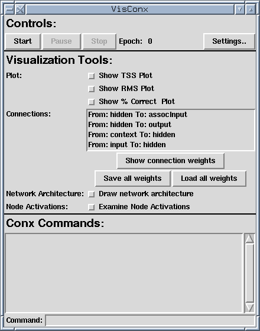

|
|||||||
| [ Home ] | [ Software ] | [ Curriculum ] | [ Hardware ] | [ Community ] | [ News ] | [ Publications ] | [ Search ] |
|
Introduction to VisConxVisConx provides a set of tools for visualizing Conx neural networks. VisConx can display a network's structure, its weights (using a Hinton diagram), the network's output error as a function of the time step, and the network's activations.
General DesignThe VisConx classes combine a Conx neural network and visualization tools in a single class. Two different visualization modes are available. The VNetwork and VSRN classes are intended for training and analyzing stand-alone neural networks. The VINetwork and VISRN classes are intended for visualizing interactive networks which are incorporated into some larger system (e.g. a robot brain).
A Basic VSRN ExampleAn example of how to use the VSRN class is shown below.
#VisSweepEx.py
from pyrobot.brain.conx import *
myNet = VSRN()
myNet.addLayers(3,3,3)
myNet.add(Layer('assocInput',3))
myNet.connect('hidden', 'assocInput')
myNet.associate('input', 'assocInput')
myNet.predict('input', 'output')
myNet.setInputs([[1,0,0, 0,1,0, 0,0,1, 0,0,1, 0,1,0, 1,0,0]])
myNet.setSequenceType("random-continuous")
myNet.setEpsilon(0.1)
myNet.setMomentum(0.3)
myNet.setBatch(1)
myNet.setTolerance(0.1)
myNet.setStopPercent(0.7)
[
Let's examine this code and see what it does. First, it imports the vconx classes and creates the VSRN object. What follows should be familiar from basic Conx code: layers are added to the network, connections are created, and network parameters are set. Nothing else is required! The visualization will all be set up automatically. The most important thing to note about the code above code is that the network's inputs and outputs are set using setInputs and setOutputs. VSRN uses the sweep method of conx, which requires that inputs and outputs are set this way. Finally, note that this example uses a VSRN network. Using VNetwork would be virtually identical. Simply replace the VSRN constructor with the VNetwork constructor, and remove any commands available in SRN but not in Network.
Now paste this code into a file and run the file in interactive mode (i.e. call python with the -i flag).
After doing this, you should see a screen like the one below. 
A Basic VINetwork ExampleAs noted above, VINetwork is intended to be used to visualize a network which is a part of a larger program. An example which incorporates a network into a simple robot brain is shown below. This brain is based on a similar brain which used conx.Network object as its neural network. The conversion requied only two modifications: 1. Importing the the vconx classes. 2. Replacing the call to the Network constructor with a call to the VINetwork constructor.
#VisRobotBrain.py
from pyrobot.brain import Brain
from pyrobot.brain.vconx import *
from pyrobot.gui.plot.scatter import *
from pyrobot.gui.plot.hinton import *
from os import system, unlink
def a2s(a):
""" array to string """
retval = ''
for i in range(len(a)):
retval += "%.5f " % a[i]
return retval
class NNBrain(Brain):
"""
This is an example brain controlled by a neural network.
This simple example loads the range sensor data into the
input layer, and trains the network to stay away from
things.
"""
def setup(self):
""" Create the network. """
self.net = VINetwork()
self.hiddenLayerSize = 10
self.net.addLayers(self.robot.range.count,
self.hiddenLayerSize, 2)
self.net.setBatch(0)
self.net.initialize()
self.net.setEpsilon(0.5)
self.net.setMomentum(.1)
self.net.setLearning(1)
self.counter = 0
self.maxvalue = self.robot.range.getMaxvalue()
def destroy(self):
self.net.destroy()
def scale(self, val):
return (val / self.maxvalue)
def step(self):
# First, set inputs and targets:
ins = [self.scale(s.value) for s in self.robot.range["all"]]
# Compute targets:
target_rotate = 0.5
if min([s.value for s in self.robot.range["front"]]) < 1:
target_trans = 0.0
target_rotate = 0.0
elif min([s.value for s in self.robot.range["back"]]) < 1:
target_trans = 1.0
else:
target_trans = 1.0
if min([s.value for s in self.robot.range["left"]]) < 1:
target_rotate = 0.0
elif min([s.value for s in self.robot.range["right"]]) < 1:
target_rotate = 1.0
target = [target_trans, target_rotate]
# set inputs and targets with step
self.net.step( input = ins, output = target)
# get the output, and move:
trans = (self.net['output'].activation[0] - .5) / 2.0
rotate = (self.net['output'].activation[1] - .5) / 2.0
self.robot.move(trans, rotate)
self.counter += 1
def INIT(engine):
return NNBrain('NNBrain', engine)
[
Once again, the visualization is set up automatically. When the brain is loaded, the network visualization will start on its own.
Common Features in VNetwork and VINetworkMany of the features of the two VisConx interfaces are the same. These shared GUI features are explained below.
Settings DialogThe settings dialog can be brought up by clicking on the button labeled Settings... at the top of the screen. Many of the network parameters normally set through the set methods Conx provides can be set in this dialog. It is important to note that, while this dialog is open, VisConx halts until the dialog is closed. This is a particular problem in VINetwork because when VisConx halts, the brain stops sending signals to the robot. Thus, it is a good idea to stop the robot controlled by the network before opening the settings dialog.
Error PlotsThe error plots display network error. The data displayed in the plot can be saved through the File menu. Lines connecting data points can be hidden or restored in the View menu. In the VNetwork interface, the "time step" unit is the epoch and the plot is updated every epoch. In the VINetwork interface, the "time step" unit is a call to propogate; however, the plot is only updated when backprop is called.
Connections and WeightsNext to the connections label, there is a list box containing an entry for every connection in the network. Highlighting a connection in the list box and clicking on Show weights creates a Hinton diagram illustrating those weights. It is also possible to save or load all of the network's weights to or from a file using the Save all weights and Load all weights buttons.
Network Architecture DiagramChecking the network architecture checkbox creates a diagram which shows the layers in the network and the relationships between them. At the bottom of the screen is a legend indicating the type of connection realized by each color arrow. Note that in the case of forward connections and contexts, the arrowhead points in the direction which activation flows. In an autoassociation relationship, layer pointed to receives its targets from which the arrow originated. In a prediction relationship, the layer pointed to predicts the next activations of the the layer from which the layer originated.
Conx CommandsCommands for the network (e.g. to add new layers or manually copy activations, etc.) can be entered in the command box at the bottom of the screen. Any output from these commands appears in the text box above the command box. Any commands entered are evaluated in a namespace where self is bound to the VisConx object. Thus, ommands can be issued to the network using the syntax self.<command>
Features Specific to VNetwork and VSRN
TrainingVNetwork allows graphical control over the training of networks. Using the Start button, the user can begin training. Note that pressing the Start button will produce an error. While the network is training, training can be suspended using the Pause button. After the Pause button is pressed, it becomes a Resume button. The Resume button recommences training. The Stop button ends training entirely. Note that pressing the Start button after a training run has been completed or after pressing the Stop button resets the network's weights and discards any data already collected.
Node Activations Diagram
The node activations diagram shows the activations resulting from each of the inputs designated in setInputs. Note that this display is only available after the network has completed a training run or while training is paused The Layers... dialog allows the user to choose which layers are displayed.
Features Specific to VINetwork
Node Activations DiagramThe node activations diagram is slightly different in the VINetwork interface. The display is available at any time and is updated with the network's activations every time propagate is called.
Pyro Modules Table of Contents
Modules
Additional ResourcesReference: PyroSiteNotes
|
| [ Home ] | [ Software ] | [ Curriculum ] | [ Hardware ] | [ Community ] | [ News ] | [ Publications ] | [ Search ] |
 View Wiki Source | Edit Wiki Source | Mail Webmaster
View Wiki Source | Edit Wiki Source | Mail Webmaster | |||||||